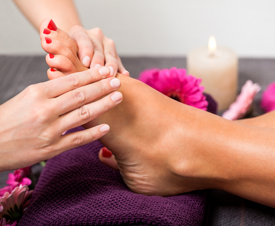
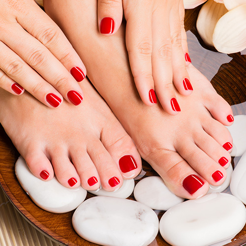
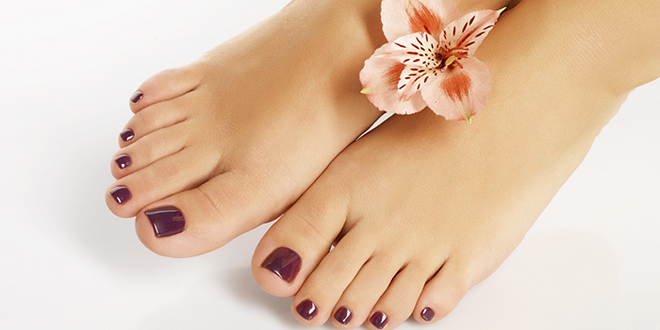

Pedicure
El mejor Pedicure que recibiras en la vida
Si aún no sabes qué tinte va mejor con tu tono de piel, a continuación te dejamos una lista de tonos que seguramente se te verán fantásticos si eres de tez morena. Estos tonos te favorecerán y harán que tus facciones luzcan increíbles. Anímate a hacerte ese cambio de look que tanto deseas ¡sin miedos!
| Servicio | Descripción | Imagen |
|---|---|---|
| Pedicura Aroma (90min) | Sabemos que para ti es esencial lucir unos pies perfectos, pero a la vez sentir una verdadera relajación, es por esto que Artepil Spa crea para ti Pedicure Aroma, abundante en masaje, aromaterapia, bienestar y belleza. Elige una de nuestras tres combinaciones de Aromaterapia y disfruta de al máximo de nuestro ritual de relajación: Sinergia de Menta – Yerbabuena – Eucalipto. |  |
| Pedicura Artepil | Una experiencia que realmente consiente tus pies, por algo un predilecto. Inicia tu relajación eligiendo un té terapeutico. Para este servicio te recomendamos el té relajante o de albahacar. Tus pies reposarán en una tina con infusión de lavanda buscando su total relajación. |  |
| Pedicura Clásico | Un servicio simplemente necesario para mantener unos pies divinos cuando el tiempo apremia. Los pies reposan en agua calientita con infusión de Romero para despertar los sentidos. Se limpia la uña retirando residuos de esmalte, se liman y se les da forma. Se retiran callosidades del pie, las cutículas se tratan y si se desea se retiran. |  |
| Pedicura Parafina | Cuando tus pies demandan suavidad e hidratación, lo que necesitan es nuestro Pedicure Parafina, el cual además de ser necesario, es relajante y terapéutico. El tratamiento inicia cuando tú eliges un té herbal de nuestra selección. Te encantará el de eucalipto o de anís. Elige cada vez uno diferente. "tabla" src="img/p4.jpg"> |